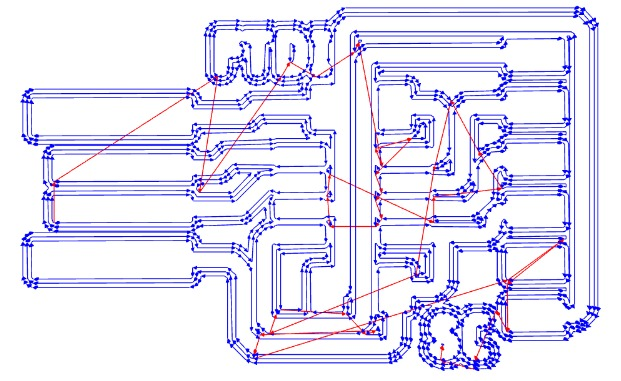

Fabricating Printed circuit boards aka PCBs was the first topic I learnt in this module! Before making PCBs we need to understand what are PCBs and why do we make it!
PCBs are in our everyday electronics, such as our smartphones and personal computers. It is important to be able to customise PCBs to the consumers needs so that electronic devices are able to perform their tasks and fit into their correct sizes. Below is an image of a PCB in your typical classroom calculator!
In the calculator above, the PCB is produced commercially, which means that it is fabricated in a factory, together with hundreds and thousands of similar boards. This means the process of manufacturing needs to be efficient and of quailty standards. Therefore, such boards are made out of a special composite material called FR-4. FR4, also written as FR-4, is both a name and a standard rating. The name is applied to the fiberglass-reinforced epoxy-laminated sheets used in printed circuit board manufacturing. FR4 sheets are widely popular among electrical engineers and designers as a PCB base material. The low cost and versatility of the material, as well as its wealth of beneficial physical properties, account for that popularity. FR4 sheets are electrical insulators with high dielectric strength. They also feature a high strength-to-weight ratio and are lightweight and resistant to moisture. Add this to their relative temperature resistance, and FR4 material can perform well in most environmental conditions.
However in FabLab, we do not have the necessary equipment for the complex manufacturing processes of FR-4, thus, we use another class of PCB material, FR-1. FR-1 is a hard, flat material that consists of a thin layer of copper over a non-conductive phenolic resin. It is primarily used for making circuit boards. The thin copper layer can be milled or etched away, leaving traces to which electronic components can be soldered. Below is a pre-fbaricated piece of FR-1!
In order to start fabricating the board, a board design is needed. PCB design is covered in the next topic! To skip there click HERE!! After attaining the board design we need to generate a g-code for the cnc milling machine. We use a website called mods. What is a g-code? As we know, computers cannot understand our language, thus we have to translate what we want into a language that the computer recognizes, aka g-code! After we load our designs into the website we need to select the necessary options with regard to the milling process, typical milling settings are selected as shown below.
In mods we select the nature of the design which in the case below the design is a PCB trace. And the necessary milling setting are loaded for you, matching the appropriate milling profile for the cut.
The settings for traces are as such:
The settings for outline are:
After selecting the settings, a visual of the toolpath is shown! Below you can see the toolpath for the the traces, with 3 offsets and a overlap in each offset of 0.5 diameter of the tool.
After the g-code is attained, it is loaded into the computer numeric cutter machine and milling begins! As seen below you can see the board being cut!
Following that, the assembly of the PCB begins! The components are carefully picked out with tweezers and soldered on to the milled boards! As you can see below, the components are so small that sometimes visual aid equipment needs to be used!
After everything is done a nice PCB is produced! As you can see all the components and its details are really intricate. Below is an FTDI PCB with a CH340 IC chip!!
Click here to return back to documentations!!